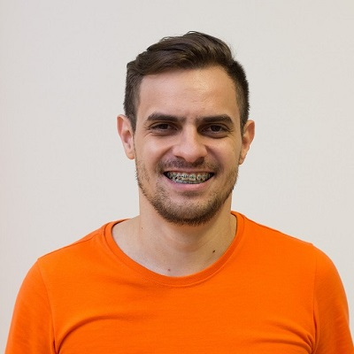

- Home
- >
- CV
Summary
Pesonal Info

Name:
Roberto Borges da Silva
Birth Date:
Oct 15th, 1984
Residence:
Tijucas, Santa Catarina - Brasil
Languages:
Portuguese (Native)
English - Basic Level
About me
Hi! Be welcome and nice to meet you! I'm Roberto I love technology and I'm studying programming in college Fael.
I have been working with technology for more than ten years. The fourth started with Helpdesk and helping people with SQLs, changes in databases and data import.
Currently, I'm focused on programming and learning with projects in my college or with projects of the studies parallels.
Over the last few years, I've been improving and learning more about new technologies going to events as TDC, Front in Floripa, BrazilJS on Roads, Meetups and Talks.
EDUCATION
2016
Information Systems - Fael University. Expected to finish in 2019
2007-2009
Programming of computers in Java - SENAI São José/SC
SKILLS
WEB DEVELOPMENT & PROGRAMMING
HTML / CSS / Bootstrap / Javascript / PHP / SQL / RUBY / MAGENTO
WORK EXPERIENCE
2019-PRESENT
Front-end Development at Híbrido - BRUSQUE - SANTA CATARINA
2015-2019
Helpdesk at ASSEINFO - TIJUCAS - SANTA CATARINA
2010-2015
Partner and Technical at Ihnove Telecom - SÃO JOÃO BATISTA - SANTA CATARINA
2005-2010
Technical at OI Telecom - FLORIANÓPOLIS - SANTA CATARINA
Contact
borges@gmail.com.br
(48) 99176-8501